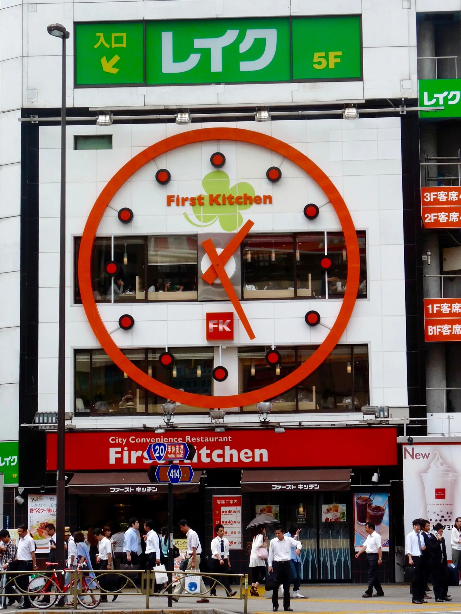
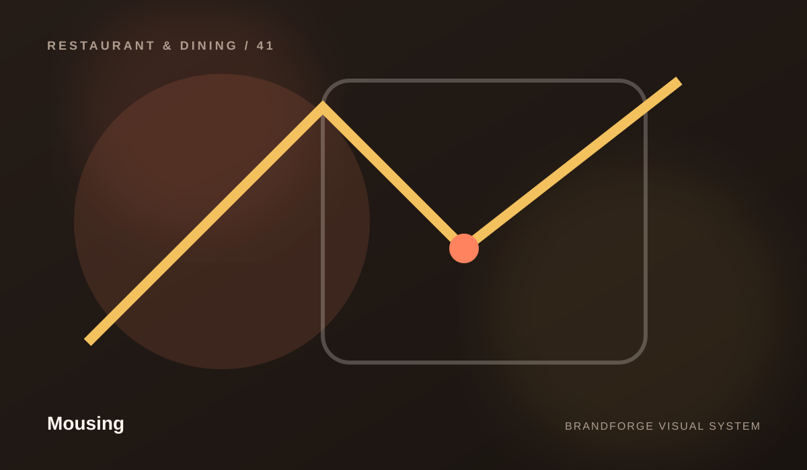
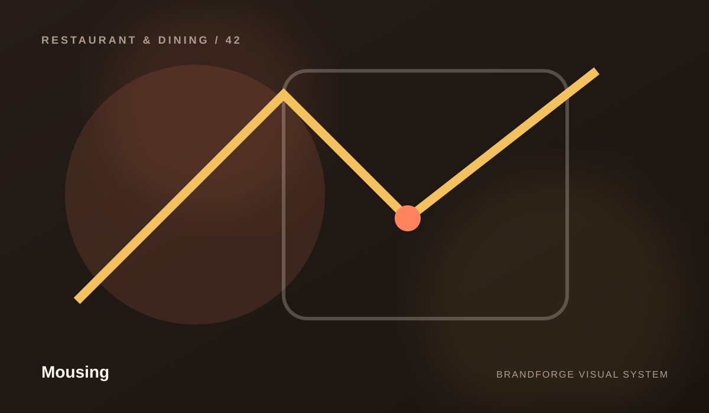
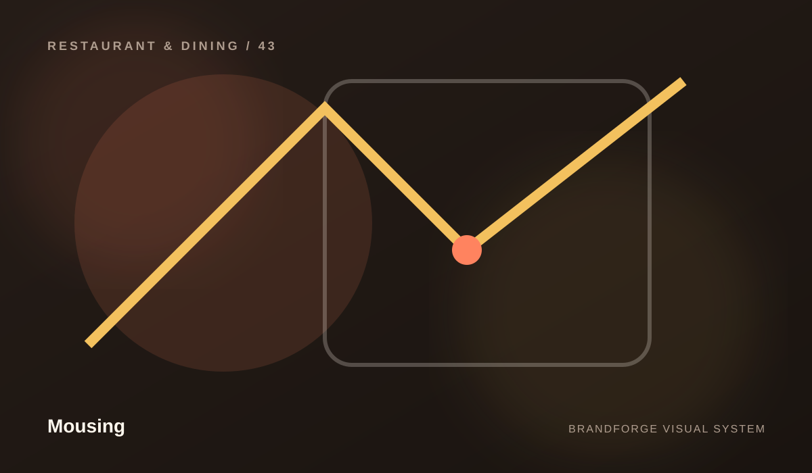

Mousing
Ideas with enough depth to be useful.
Editorial content gives a professional website substance beyond sales copy. These articles are written as general educational material rather than invented case studies or claims.


INSIGHT / 01
Menus are information design
Why hierarchy matters before guests arrive.
Read article →
INSIGHT / 02
Hospitality begins online
How reservations, hours, access, and atmosphere reduce uncertainty.
Read article →
INSIGHT / 03
Photography needs a point of view
Why food and space imagery should feel like one visual system.
Read article →